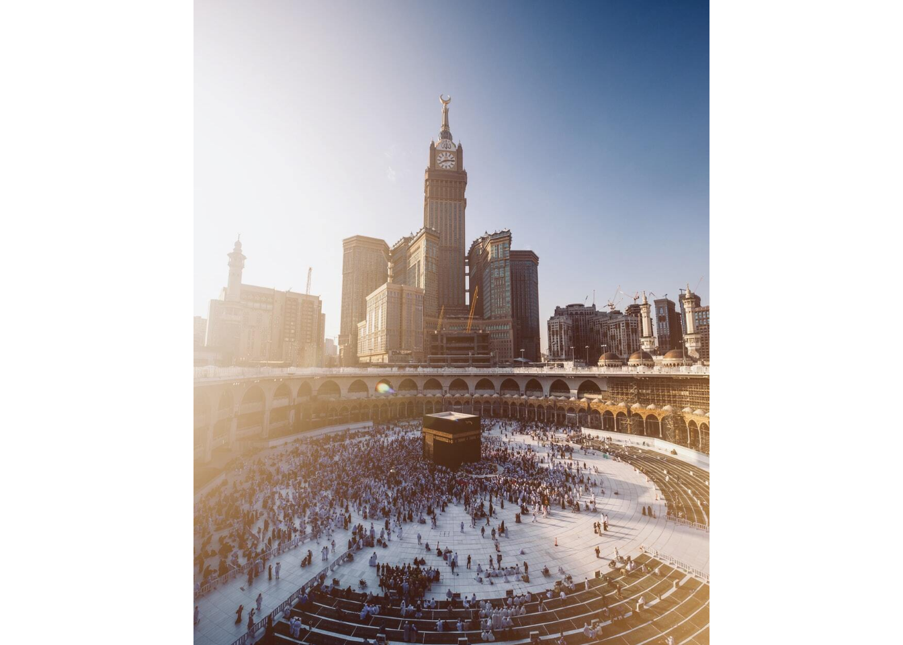
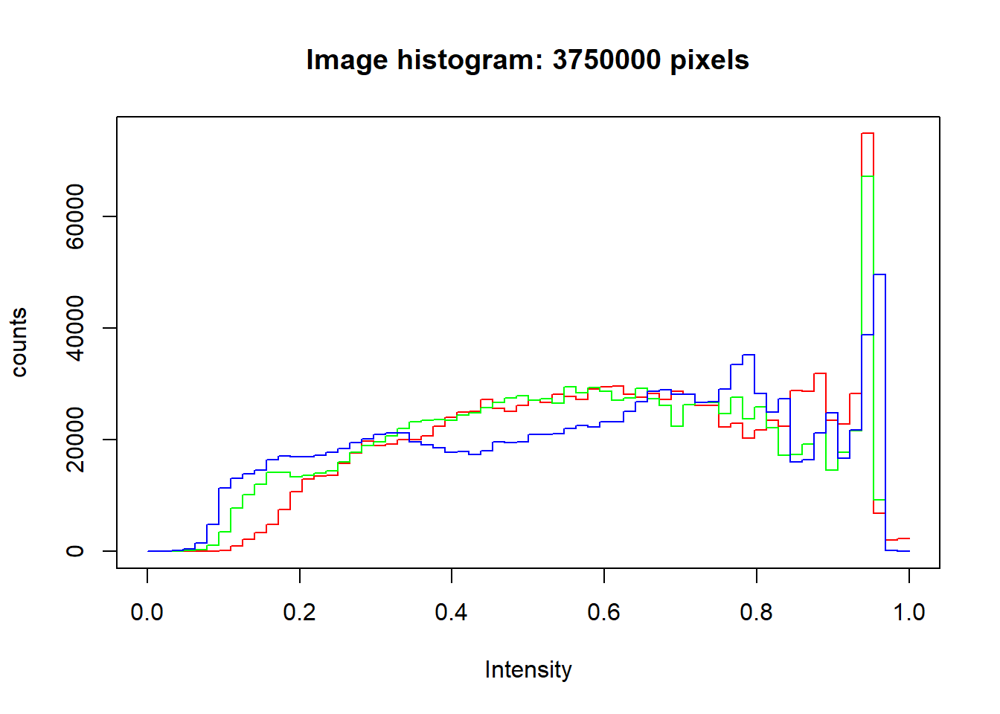
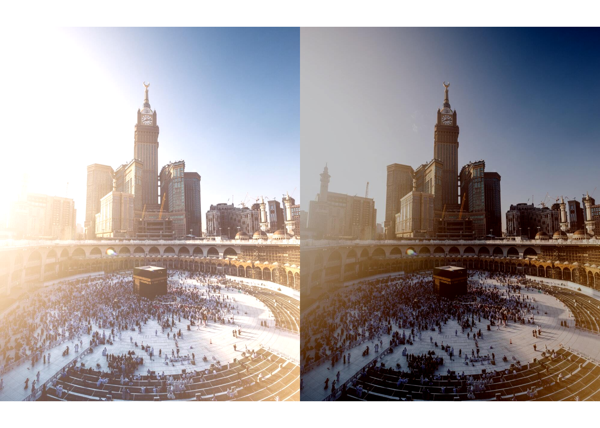
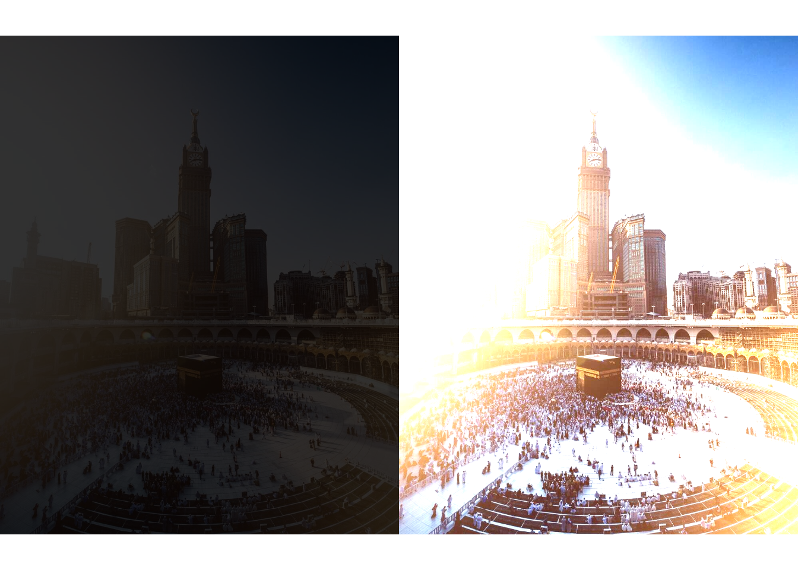
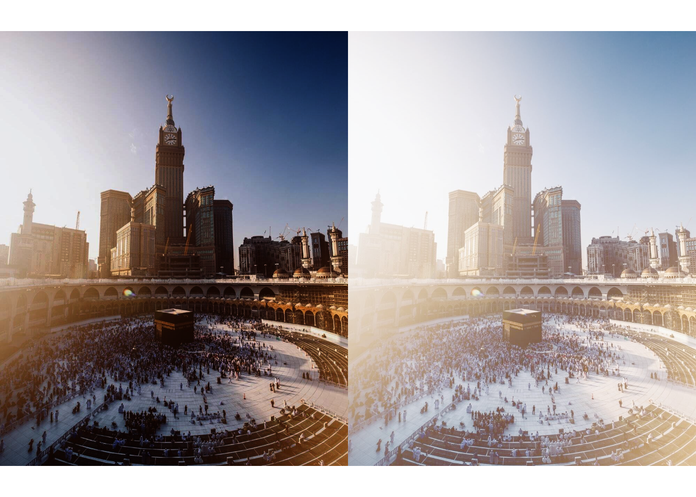
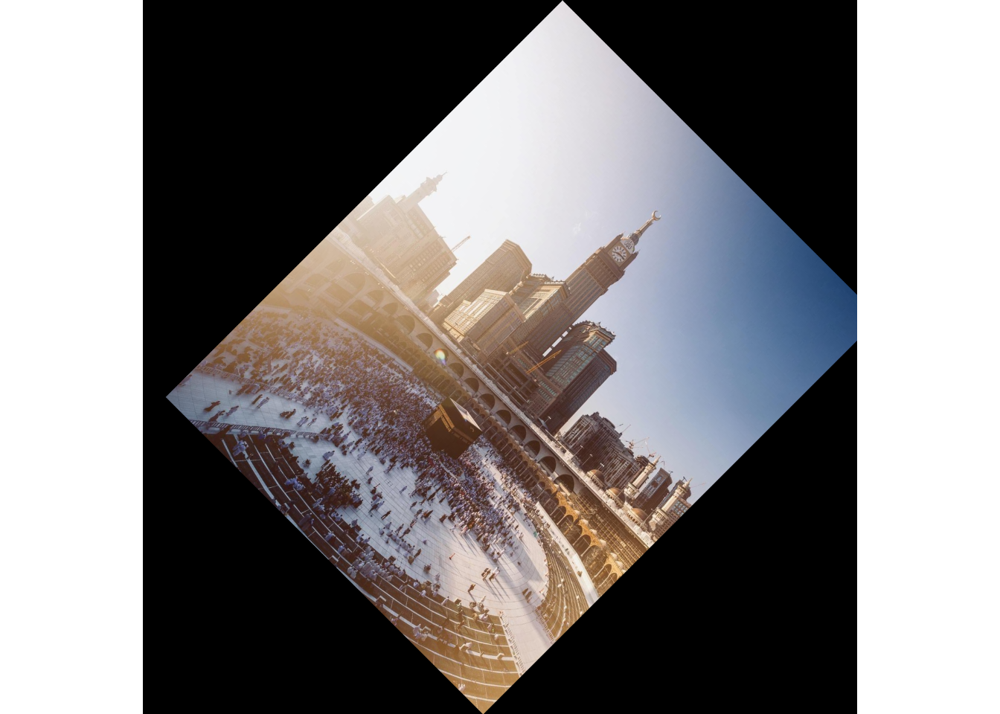
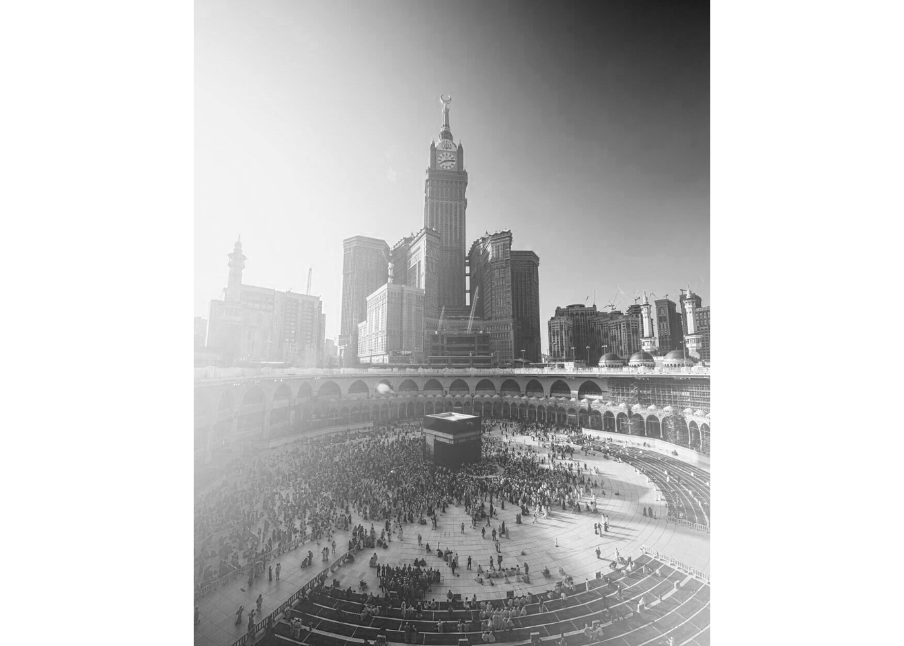
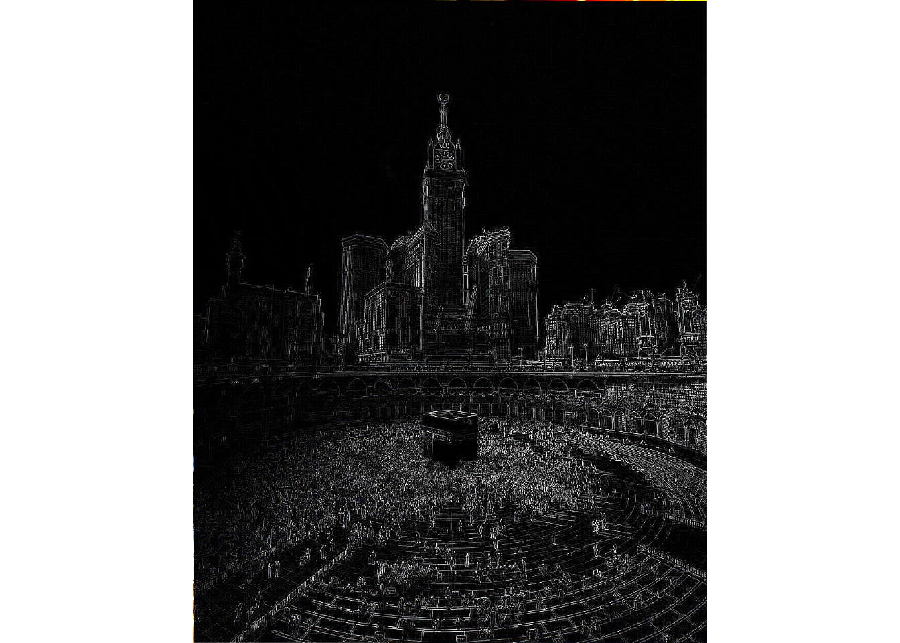

Langkah pertama adalah menginstall package BiocManager terlebih dahulu
if (!requireNamespace("BiocManager", quietly = TRUE))
install.packages("BiocManager")
BiocManager::install("EBImage")## Bioconductor version 3.12 (BiocManager 1.30.10), R 4.0.3 (2020-10-10)## Installing package(s) 'EBImage'## package 'EBImage' successfully unpacked and MD5 sums checked
##
## The downloaded binary packages are in
## C:\Users\Tgar\AppData\Local\Temp\RtmpWwZ98C\downloaded_packages## Old packages: 'Matrix', 'xfun'Pilih lokasi yang ingin digunakan untuk menampilkan gambar
setwd("D:/RSTUDio/ebimagee")Kita panggil Library EBImage untuk menampilkan gambar
library(EBImage)Gunakan perintah readImage(‘nama gambar’) untuk membaca gambar yang ingin ditampilkan.
Image <- readImage('kabah.JPG')gunakan display(Image) untuk menampilkan gambar yang sudah dipilih
display(Image)
gunakan print(Image) untuk menampilkan sifat gambar berupa matriks yang sudah dipilih
print(Image)## Image
## colorMode : Color
## storage.mode : double
## dim : 1000 1250 3
## frames.total : 3
## frames.render: 1
##
## imageData(object)[1:5,1:6,1]
## [,1] [,2] [,3] [,4] [,5] [,6]
## [1,] 0.8901961 0.8901961 0.8901961 0.8901961 0.8901961 0.8901961
## [2,] 0.8901961 0.8901961 0.8901961 0.8901961 0.8901961 0.8901961
## [3,] 0.8901961 0.8901961 0.8901961 0.8901961 0.8901961 0.8901961
## [4,] 0.8901961 0.8901961 0.8901961 0.8901961 0.8901961 0.8901961
## [5,] 0.8901961 0.8901961 0.8901961 0.8901961 0.8901961 0.8901961gunakan hist(Image) untuk mengetahui Histogram dari gambar yang kita pilih
hist(Image)
simbol (+) : untuk mencerahkan.
simbol(-) : untuk mengurangi kecerahan.
Percobaan kali ini akan menambahkan 0.2 dan mengurangi 0.2 untuk intensitasnya.
Plot berfungsi untuk menampilkan kedua gambar tersebut.
Image1 <- Image + 0.2
Image2 <- Image - 0.2
par(mfrow= c(1,2))
plot(Image1)
plot(Image2)
Penyesuaian Kontras berfungsi untuk menyesuaikan gradasi untuk bagian terang dan bagian gelap dari keseluruhan gambar
gunakan perkalian (jika mengkali dengan angka dibawah 1 maka akan menggelapkan gambar).
Image3 <- Image * 0.2
Image4 <- Image * 2
par(mfrow = c(1,2))
plot(Image3)
plot(Image4)
Koreksi Gamma berfungsi untuk mengatur pencahayaan yang ada didalam gambar agar mengimbangi sistem pengelihatan mata manusia.
gunakan simbol pangkat (^) untuk menganturnya (semakin besar angka maka semakin gelap)
Image5 <- Image ^ 2
Image6 <- Image ^ 0.5
par(mfrow=c(1,2))
plot(Image5)
plot(Image6)
Kode dibawah ini digunakan untuk memotong gambar. Ukuran gambar yang digunakan saat ini adalah 1000 X 1250, maka tidak boleh melebihi angka jika ingin memotong gambarnya.
display(Image[350:900, 250:900,])Transformasi Spasial Berfungsi untuk memutar gambar berdasarkan posisi matrix gambar
Imagetr <- translate(rotate(Image, 45), c(50, 0))
display(Imagetr)
colorMode(Image) <- Grayscale
display(Image)## Only the first frame of the image stack is displayed.
## To display all frames use 'all = TRUE'.
print(Image)## Image
## colorMode : Grayscale
## storage.mode : double
## dim : 1000 1250 3
## frames.total : 3
## frames.render: 3
##
## imageData(object)[1:5,1:6,1]
## [,1] [,2] [,3] [,4] [,5] [,6]
## [1,] 0.8901961 0.8901961 0.8901961 0.8901961 0.8901961 0.8901961
## [2,] 0.8901961 0.8901961 0.8901961 0.8901961 0.8901961 0.8901961
## [3,] 0.8901961 0.8901961 0.8901961 0.8901961 0.8901961 0.8901961
## [4,] 0.8901961 0.8901961 0.8901961 0.8901961 0.8901961 0.8901961
## [5,] 0.8901961 0.8901961 0.8901961 0.8901961 0.8901961 0.8901961colorMode(Image) <- Color
display(Image)print(Image)## Image
## colorMode : Color
## storage.mode : double
## dim : 1000 1250 3
## frames.total : 3
## frames.render: 1
##
## imageData(object)[1:5,1:6,1]
## [,1] [,2] [,3] [,4] [,5] [,6]
## [1,] 0.8901961 0.8901961 0.8901961 0.8901961 0.8901961 0.8901961
## [2,] 0.8901961 0.8901961 0.8901961 0.8901961 0.8901961 0.8901961
## [3,] 0.8901961 0.8901961 0.8901961 0.8901961 0.8901961 0.8901961
## [4,] 0.8901961 0.8901961 0.8901961 0.8901961 0.8901961 0.8901961
## [5,] 0.8901961 0.8901961 0.8901961 0.8901961 0.8901961 0.8901961Low-Pass Filter berfungsi untuk membuat gambar dikaburkan atau diburamkan
fLow <- makeBrush(21, shape= 'disc', step=FALSE)^2
fLow <- fLow/sum(fLow)
Image.fLow <- filter2(Image, fLow)
display(Image.fLow)High-Pass Filter berfungsi untuk membuat gambar menjadi menjadi lebih tajam atau mengurangi halus.
fHigh <- matrix(1, nc = 3, nr = 3)
fHigh[2, 2] <- -8
Image.fHigh <- filter2(Image, fHigh)
display(Image.fHigh)
Median Filter berfungsi untuk mengurangi bintik (Noise reduction) pada gambar
medFltr <- medianFilter(Image, 1.1)
display(medFltr)